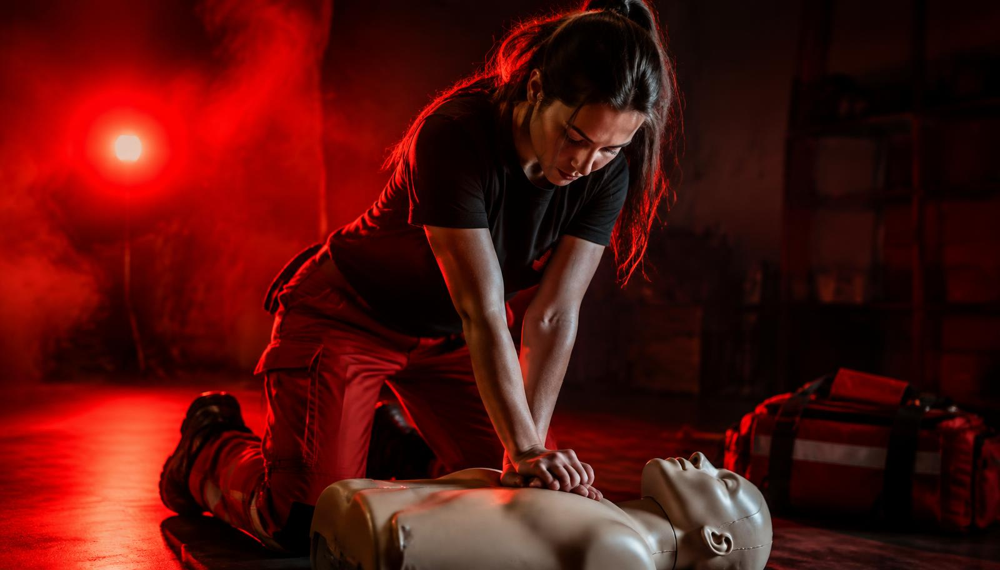
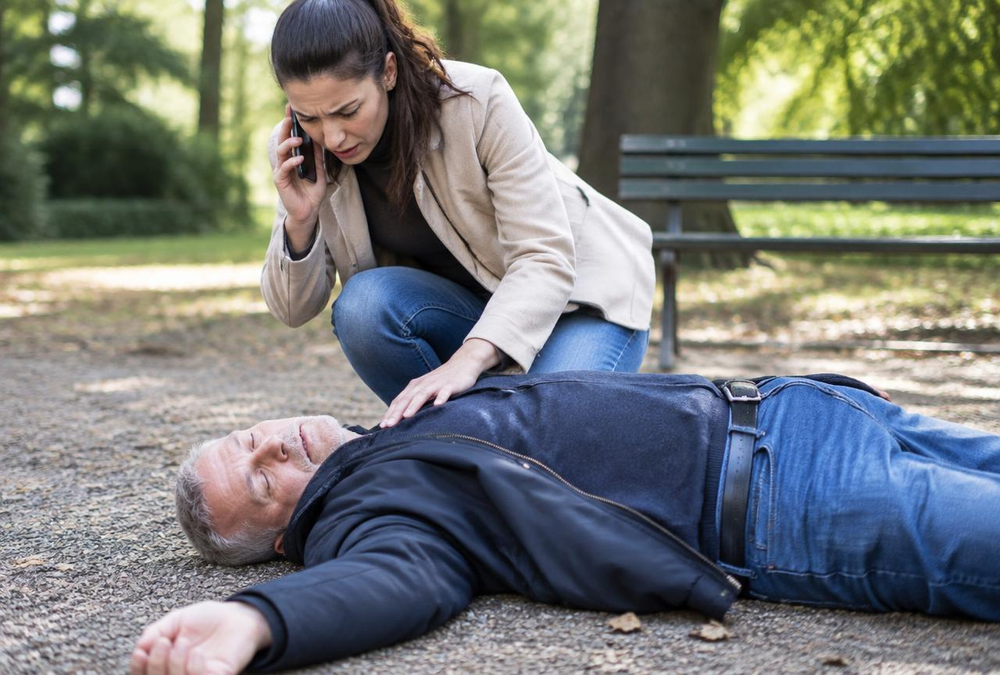
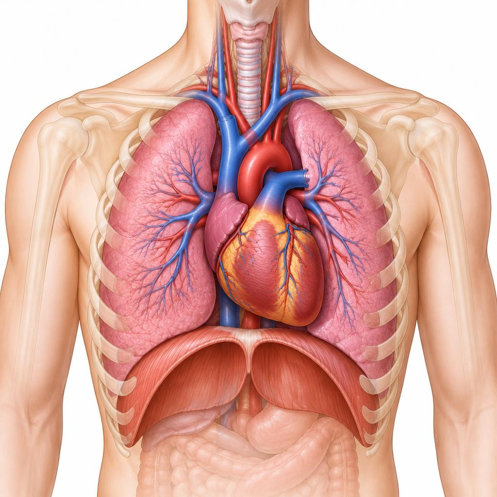
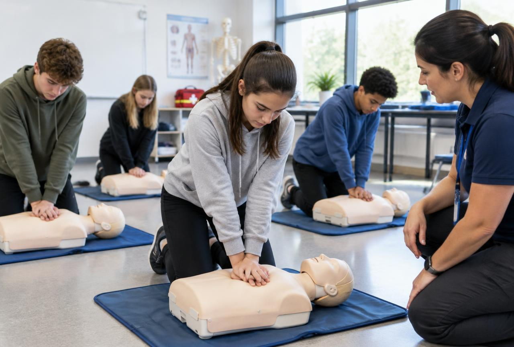
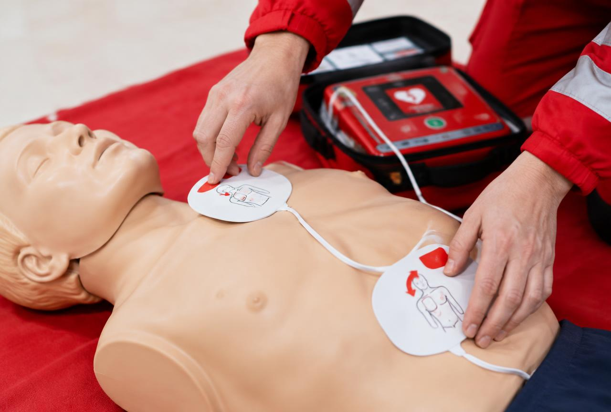

Quando um coração para, as mãos certas podem fazê-lo bater de novo. Tudo o que você precisa saber para salvar uma vida.
Reanimação Cardiopulmonar (RCP) é um conjunto de manobras de emergência — compressões no peito e, quando possível, ventilações (respiração boca a boca) — que mantém o sangue oxigenado circulando até o cérebro e o coração de uma pessoa em parada cardiorrespiratória.
A RCP não "conserta" o coração: ela ganha tempo até a chegada de um desfibrilador (DEA) e da equipe médica. Sem circulação, as células do cérebro começam a sofrer lesões em cerca de 4 a 6 minutos, e após 10 minutos os danos costumam ser irreversíveis.
Sempre que a vítima estiver inconsciente (não responde) e não respirar ou respirar de forma anormal (apenas "gasping" — suspiros agônicos). Situações comuns:


Os dois órgãos ficam dentro da caixa torácica e trabalham juntos: um leva o oxigênio para dentro do sangue, o outro bombeia esse sangue para o corpo inteiro.
Onde fica: no centro do tórax, atrás do esterno, levemente inclinado para a esquerda, entre os pulmões. Tem mais ou menos o tamanho de um punho fechado.
Função: é uma bomba muscular com 4 cavidades (2 átrios e 2 ventrículos). O lado direito envia sangue pobre em oxigênio aos pulmões; o lado esquerdo bombeia o sangue oxigenado para todo o corpo pela aorta.
Onde ficam: um de cada lado do tórax, ocupando a maior parte da caixa torácica, apoiados sobre o diafragma. O direito tem 3 lobos; o esquerdo, 2 (para dar espaço ao coração).
Função: realizar a troca gasosa. Nos alvéolos, o oxigênio do ar passa para o sangue e o gás carbônico sai do sangue para ser expirado.
Sequência recomendada pelas diretrizes da American Heart Association (AHA) para leigos treinados: C-A-B — Compressões, Abertura das vias aéreas, Boa ventilação.
Verifique se o local é seguro para você e para a vítima (trânsito, fogo, eletricidade, água).
Toque nos ombros e chame em voz alta: "Você está bem?". Observe se há respiração normal por até 10 segundos.
Ligue 192 (SAMU) ou 193 (Bombeiros), coloque no viva-voz e peça que alguém traga um DEA.
Vítima de costas em superfície rígida. Mãos entrelaçadas no centro do peito, na metade inferior do esterno, braços esticados.
100 a 120 por minuto, afundando 5 a 6 cm. Deixe o tórax voltar totalmente após cada compressão.
Após 30 compressões, incline a cabeça, eleve o queixo, tape o nariz e faça 2 sopros de 1 segundo, vendo o peito subir.
Assim que chegar, ligue o aparelho e siga as instruções de voz. Ninguém deve tocar na vítima durante o choque.
Continue até a vítima reagir, o socorro assumir ou você ficar exausto. Revezem a cada 2 minutos.
| Item | Adulto / adolescente | Criança (1 ano à puberdade) | Bebê (menos de 1 ano) |
|---|---|---|---|
| Mãos | Duas mãos entrelaçadas | Uma ou duas mãos | Dois dedos (ou dois polegares) |
| Profundidade | 5 a 6 cm | Cerca de 5 cm (1/3 do tórax) | Cerca de 4 cm (1/3 do tórax) |
| Ritmo | 100 a 120 compressões por minuto | ||
| Relação (1 socorrista) | 30:2 | 30:2 | 30:2 |
| Relação (2 socorristas) | 30:2 | 15:2 | 15:2 |
Faça um curso prático de RCP, ministrado por instrutor qualificado, no máximo um ano antes de receber a especialidade — e demonstrar o procedimento corretamente.
Ler sobre RCP é o começo, mas só a prática em manequins ensina a força, o ritmo e a profundidade certos. Onde encontrar cursos:


O Desfibrilador Externo Automático analisa o ritmo do coração e, se necessário, aplica um choque para "reiniciá-lo".
Ele fala com você, passo a passo, e só libera o choque quando realmente é preciso — por isso pode ser usado por leigos. Procure-o em aeroportos, shoppings, estádios, academias e grandes empresas. RCP + DEA nos primeiros 3 a 5 minutos pode elevar a sobrevivência para mais de 50%.
A melhor RCP é aquela que nunca precisa ser feita. Doenças cardiovasculares são a principal causa de morte no Brasil e no mundo — e a maioria pode ser prevenida com bons hábitos, como ensinam os 8 remédios naturais.
Pelo menos 150 minutos por semana de atividade moderada: caminhar, pedalar, nadar, acampar e fazer trilhas.
Frutas, verduras, grãos integrais, castanhas e leguminosas. Menos sal, açúcar, frituras e ultraprocessados.
Cigarro, vape e álcool danificam os vasos, elevam a pressão e aumentam muito o risco de infarto.
O excesso de peso sobrecarrega o coração e favorece diabetes, colesterol alto e hipertensão.
7 a 9 horas de sono por noite e um dia de descanso semanal ajudam a regular pressão e batimentos.
Oração, contato com a natureza, amizades e lazer reduzem os hormônios do estresse.
Hidratação adequada ajuda o sangue a circular e o coração a trabalhar com menos esforço.
Medir pressão, glicose e colesterol regularmente permite tratar problemas antes que se agravem.
Cada cor e forma do emblema carrega uma lição sobre o socorrista e sobre a vida.
A pessoa que precisa de RCP pode estar pálida, o que significa que não há circulação.
Quem faz a RCP está vermelho, o que significa que está bem ativo.
Representa o valor da vida humana.
Formado pela cabeça, ombros e braços do socorrista: compaixão pelo próximo.
"Quem salva uma vida salva o mundo inteiro."Provérbio do Talmude — e o espírito do Desbravador: servir ao próximo como Jesus serviu.